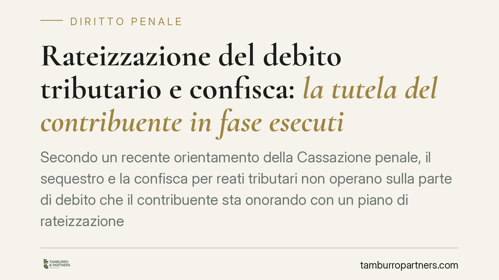

Rateizzazione del debito tributario e confisca: la tutela del contribuente in fase esecutiva
Secondo un recente orientamento della Cassazione penale, il sequestro e la confisca per reati tributari non operano sulla parte di debito che il contribuente sta onorando con un piano di rateizzazione regolarmente adempiuto. Una tutela però condizionata: se il piano decade, la misura patrimoniale torna pienamente operativa. Vediamo portata e limiti del principio.

Il caso
La questione nasce da un procedimento per reati tributari in cui, a fronte di un debito verso l'Agenzia delle Entrate, il contribuente aveva ottenuto e stava regolarmente pagando una rateizzazione. Il tema sottoposto ai giudici è se, in presenza di un piano di rientro adempiuto, sia legittimo mantenere o disporre la confisca sulle somme corrispondenti al debito in via di estinzione.
> Nota per il lettore: gli estremi della pronuncia richiamata (Sez. III penale, indicata come n. 10297/2026) vanno verificati sulle banche dati ufficiali prima di qualsiasi utilizzo processuale. Il principio qui esposto è trattato come orientamento, non come dato consolidato.
Il punto innovativo è l'estensione della tutela non solo alla fase cautelare (il sequestro preventivo finalizzato alla confisca), ma anche alla fase esecutiva successiva alla definitività. Si tratta dell'aspetto più delicato e non pacifico della decisione: va quindi letto come indirizzo affermato dalla pronuncia, da confrontare con la giurisprudenza precedente.
Inquadramento normativo
La norma di riferimento è l'art. 12 bis del D.lgs. 74/2000, che disciplina la confisca per i reati tributari. È importante segnalare che questa disposizione ha subito modifiche rilevanti: prima con il D.lgs. 158/2015, poi con il D.lgs. 87/2024.
Nella formulazione originaria, il comma 2 escludeva la confisca per la parte che il contribuente si impegnava a versare all'erario. Quel comma è stato oggetto di intervento legislativo e la disciplina attuale del rapporto tra pagamento e confisca non coincide con la versione iniziale: per questo è prudente evitare citazioni testuali risalenti e fare riferimento alla formulazione vigente.
Il D.lgs. 87/2024, in particolare, è intervenuto sul sistema sanzionatorio tributario e sui rapporti tra procedimento penale e obbligazione tributaria. L'impatto diretto sul meccanismo della confisca in caso di pagamento va misurato caso per caso: richiamarne genericamente la "ratio" sarebbe impreciso. Ciò che rileva, ai fini qui trattati, è la logica di fondo del sistema: evitare che lo Stato incassi due volte: una con la riscossione del tributo, l'altra con l'ablazione patrimoniale sullo stesso importo.
Implicazioni pratiche
Per il contribuente e per l'impresa la distinzione fondamentale è tra due piani diversi.
Da un lato c'è la responsabilità penale sul merito: l'eventuale accertamento del reato tributario non viene meno per il solo fatto del pagamento rateizzato. Il processo penale segue la propria strada.
Dall'altro c'è la misura patrimoniale della confisca: è su questo piano che incide l'orientamento in esame. Se il piano di rateizzazione è in corso e viene adempiuto, la confisca non dovrebbe colpire la parte di debito in via di estinzione.
Si tratta però di una tutela condizionata e reversibile. La protezione presuppone il pagamento regolare delle rate. In caso di decadenza dalla rateizzazione (che la normativa sulla riscossione collega al mancato versamento di un determinato numero di rate, secondo le soglie previste dalle disposizioni di settore, da verificare in relazione alla specifica procedura), la misura patrimoniale torna pienamente operativa.
In altri termini: il beneficio non è acquisito una volta per tutte, ma resta legato alla tenuta del piano di rientro.
Cosa fare in concreto
- Verificate lo stato del piano di rateizzazione: accertate quante rate siano state versate e quale sia la soglia di decadenza applicabile alla vostra specifica procedura di riscossione.
- Documentate ogni versamento: conservate quietanze e prova dei pagamenti, elementi utili a dimostrare la regolarità del piano in sede penale.
- Coordinate difesa tributaria e difesa penale: i due piani sono distinti ma interconnessi; le scelte sul debito incidono sulla misura patrimoniale.
- Segnalate tempestivamente eventuali difficoltà di pagamento: una decadenza non gestita riapre il rischio di confisca sull'importo corrispondente.
- Verificate gli estremi della pronuncia e il quadro normativo vigente prima di fondarvi su di essa in giudizio, considerate le modifiche introdotte dal D.lgs. 158/2015 e dal D.lgs. 87/2024.
Conclusioni
L'orientamento conferma la centralità della distinzione tra responsabilità penale e ablazione patrimoniale, e valorizza il comportamento del contribuente che onora il debito. Resta una tutela subordinata alla regolarità del pagamento: la sua portata, soprattutto nella fase esecutiva, andrà verificata alla luce degli sviluppi giurisprudenziali.
Contributo informativo a cura di Tamburro & Partners Avvocati. Non costituisce parere legale.
Ogni condominio ha una storia a sé.
Se gestisci un'amministrazione e vuoi un confronto su una specifica questione condominiale, scrivi allo studio. Ti rispondiamo entro un giorno lavorativo.